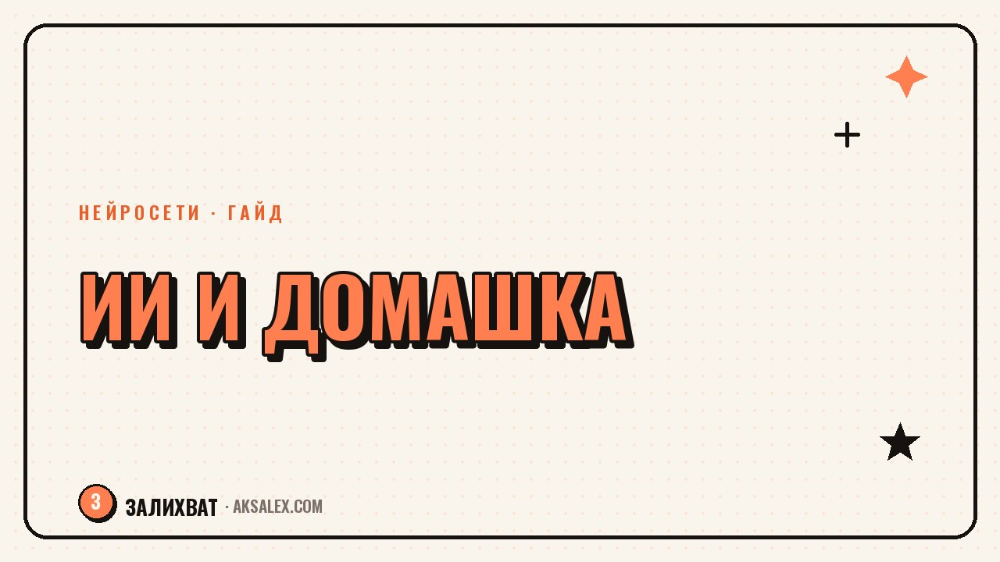

Нейросети для домашки: как помочь ребёнку, а не сделать за него

Ребёнок фотографирует пример из учебника, присылает нейросети - и через секунду у него готовый ответ. Соблазн решить домашку в один клик огромный, и родители это видят каждый вечер. Но если нейросеть просто выдаёт готовое решение, ребёнок теряет ровно то, ради чего задают домашку: навык думать самому. Разберём, как встроить нейросети в подготовку уроков так, чтобы они учили, а не подменяли собой голову ребёнка.
Почему просто скопировать ответ - плохая идея
Домашнее задание существует не для того, чтобы в тетради появилась галочка «сделано». Это тренировка: ребёнок повторяет способ решения, закрепляет его в памяти, находит свои ошибки. Если он вставляет условие в чат-бота и переписывает ответ, повторения не происходит - мозг эту задачу не решал, он её скопировал.
Со временем это накапливается. На контрольной, где нейросети под рукой нет, ребёнок сталкивается с типом задач, которые формально уже «делал» десятки раз, а по факту видит впервые. Учителя такие пробелы обычно замечают быстро: ученик правильно оформляет решение, но не может объяснить, почему сделал именно так.
Нейросеть - это тренажёр, а не подставное лицо на экзамене. Если использовать её как тренажёр, прогресс будет; если как подставное лицо - будет только иллюзия прогресса.
Как это работает по предметам
Математика и физика
Здесь самый рабочий приём - просить не ответ, а объяснение шагов. Формулировка вроде «объясни, как решать такие уравнения, на примере попроще, а этот я доделаю сам» разворачивает нейросеть в сторону обучения. После объяснения ребёнок решает похожий пример самостоятельно, а нейросеть используется как проверка: правильно ли получилось и в чём ошибка, если что-то не сошлось.
Русский язык и литература
Тут риск другой - нейросеть напишет сочинение целиком, и это будет заметно с первой строчки: взрослый ровный слог, которого не бывает у школьника. Лучше просить нейросеть накидать план сочинения, список аргументов или примеры цитат по теме - а сам текст ребёнок пишет своими словами. Тогда получится действительно его работа, просто со структурой, которую было проще выстроить с подсказкой.
Иностранный язык
Нейросеть хороша как собеседник для отработки речи и как переводчик-объяснитель грамматики, но плохая идея - просить её сделать письменное упражнение целиком. Переводы из учебника легко проверяются учителем на слух: если ребёнок не может пересказать, что написал, подмена видна сразу.
Правила, которые стоит проговорить с ребёнком заранее
Дети редко сами придумывают границы использования технологий - это задача взрослого объяснить их до того, как случится соблазн списать всё подряд. Несколько простых правил снимают большую часть проблем.
- Сначала пробуем решить сами, нейросеть - только если совсем не получается
- Просим объяснение, а не готовый ответ
- После решения с помощью нейросети пересказываем его своими словами
- На контрольных и экзаменах телефон и нейросети не используются в принципе
- Если задание творческое (сочинение, эссе), текст пишет ребёнок, а нейросеть только помогает со структурой
Полезно проговорить и обратную сторону: учителя тоже пользуются нейросетями и всё чаще умеют отличать сгенерированный текст от настоящего - по интонации, по лексике не по возрасту, по слишком ровной структуре. Так что «решить чужими руками» - не только про упущенное обучение, но и про реальный риск получить низкую оценку за явно нечестную работу.
Какую нейросеть выбрать для помощи с уроками
Для школьных задач не нужен самый дорогой или самый навороченный сервис - важнее, умеет ли он объяснять пошагово и работать с фото условия. Вот как выглядят популярные варианты на практике.
| Сервис | Сильная сторона | Ограничение |
|---|---|---|
| ChatGPT | Хорошо объясняет шаги решения, понимает фото условия | Бесплатная версия иногда обрывает длинные объяснения |
| Google Gemini | Встроен в поиск и документы, удобно на телефоне | Слабее держит математическую логику в сложных задачах |
| Photomath | Заточен именно под фото примеров и пошаговый разбор | Плохо работает с текстовыми задачами и сочинениями |
| Яндекс.Алиса / YandexGPT | Понимает школьную программу РФ, разбирает по ФГОС | Не всегда точна в узкоспециальных темах старших классов |
Как выглядит правильный промпт для домашки
Разница между «спишу ответ» и «разберусь с темой» часто решается формулировкой запроса. Вот пример, как можно попросить нейросеть помочь с задачей по геометрии вместо того, чтобы просто вставить условие.
- Не пиши готовый ответ на мою задачу
- Объясни принцип решения на похожем, но другом примере
- После объяснения задай мне пару наводящих вопросов, чтобы я решил свою задачу сам
- Если я ошибусь - укажи, на каком шаге, но не исправляй за меня
Такой промпт можно один раз сохранить и использовать как шаблон для разных предметов, меняя только тему задачи. Ребёнку постарше стоит показать этот приём напрямую - пусть формулирует запросы сам, это уже отдельный полезный навык работы с инструментом.
Что делать, если ребёнок уже привык списывать через нейросеть
Если привычка вставлять условие и копировать ответ уже сложилась, ломать её резким запретом обычно не работает - ребёнок просто станет делать это тайно. Эффективнее договориться на понятных условиях: нейросеть остаётся, но меняется способ её использования.
Хорошо помогает простой ритуал проверки: после того как задание сделано с помощью нейросети, попросите ребёнка в двух-трёх предложениях объяснить вам, что он сделал и почему. Если объяснить не получается - значит, тема не усвоена, и стоит вернуться к ней отдельно, уже без подсказок. Это не наказание, а быстрая диагностика, которая экономит нервы перед контрольной.
Частые вопросы
Можно ли вообще разрешать ребёнку пользоваться нейросетями для домашки?
Можно и даже полезно, если использовать её как объяснение и тренажёр, а не как источник готовых ответов. Ключевой критерий - может ли ребёнок после этого повторить решение сам, без подсказки.
Как проверить, что сочинение написал ребёнок, а не нейросеть?
Попросите пересказать текст своими словами или ответить на пару вопросов по содержанию. Если ребёнок путается в собственных аргументах - скорее всего, текст не его, и стоит обсудить это открыто.
С какого возраста можно давать ребёнку нейросети для учёбы?
Жёсткого возраста нет, но чем младше ребёнок, тем важнее присутствие взрослого рядом. С начальной школы лучше использовать нейросеть вместе, проговаривая вслух, что и зачем вы спрашиваете.
Какая нейросеть лучше всего объясняет школьную программу?
Для программы РФ удобнее сервисы, которые знают ФГОС, например YandexGPT. Для нестандартных или творческих заданий гибче работает ChatGPT, а для фото примеров по математике - специализированные приложения вроде Photomath.
Что делать, если учитель запретил пользоваться нейросетями вообще?
Тогда дома стоит использовать её только для объяснения темы заранее, а не во время самого выполнения задания. Так правило учителя не нарушается, а понимание темы всё равно растёт.
Раз тема оказалась полезной, вот что почитать следующим. От запроса до готового дизайна: как собрать презентацию в Gamma за 15 минут.
Читать статью →а не вручную